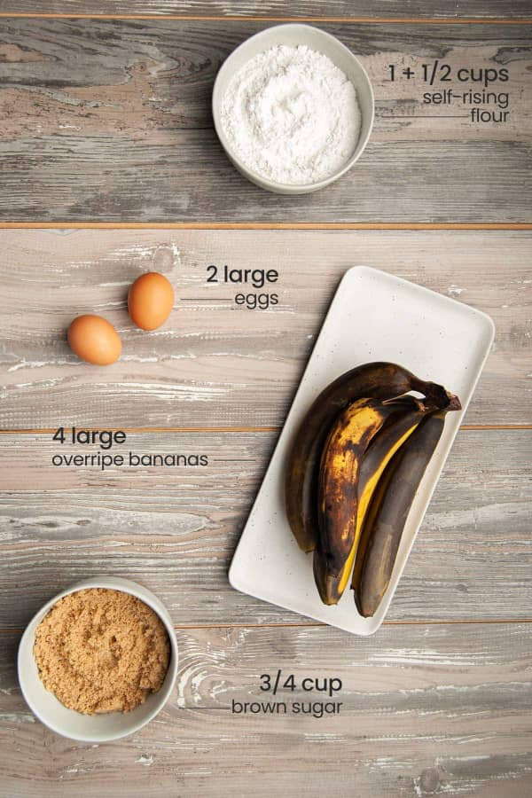

Banana Bread Recipe
Welcome to the ultimate guide for making moist banana bread!
This classic treat is perfect for satisfying your cravings with a slice of comfort. Follow this simple recipe to create a delicious loaf that’s soft on the inside, golden on the outside, and packed with rich banana flavor that everyone will love.
Ingredients
- 3 ripe bananas (mashed)
- 1½ cups all-purpose flour
- ½ cup sugar
- ⅓ cup melted butter or oil
- 1 egg
- 1 tsp baking soda
- ½ tsp salt
- 1 tsp vanilla (optional)
Instructions
- Preheat oven to 175°C (350°F) and grease a loaf pan.
- In a bowl, mash bananas and mix in egg, melted butter/oil, and vanilla.
- Add flour, sugar, baking soda, and salt. Stir gently (don’t overmix).
- Pour batter into the pan and bake for 45–55 minutes.
- Let cool, slice, and enjoy!
